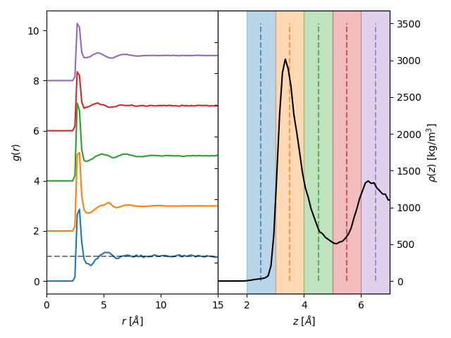

Note
Go to the end to download the full example code.
Pair distribution functions¶
Basic usage¶
In the following example, we will show how to calculate the two-dimensional planar pair distribution functions.
In the following, we will give an example of a trajectory of water confined by graphene
sheets simulated via GROMACS. We assume that the GROMACS topology is given by
graphene_water.tpr and the trajectory is given by graphene_water.xtc. Both can be
downloaded under topology and
trajectory, respectively.
From these files you can create a MDAnalysis universe object.
We begin by importing the necessary modules.
import matplotlib.pyplot as plt
import MDAnalysis as mda
import numpy as np
import maicos
Next, we proceed with the creation of a MDAnalysis universe object, from which we further select the water molecules using the resname selector.
u = mda.Universe("./graphene_water.tpr", "graphene_water.xtc")
This universe object can then be passed to maicos.modules.pdfplanar.PDFPlanar
analysis object.
It expects you to pass the atom groups you want to perform the analysis for.
In our example, we have graphene walls and SPC/E water confined between them,
where we are interested in the dielectric behavior of the fluid.
Thus, we will first select the water as an MDAnalysis atom group using
MDAnalysis.core.groups.AtomGroup.select_atoms(). In this case we select
the water by filtering for the residue named SOL.
water = u.select_atoms("resname SOL")
ana_obj = maicos.PDFPlanar(
water,
water,
dzheight=0.25,
dim=2,
pdf_bin_width=0.2,
refgroup=water,
zmin=-5.0,
zmax=0,
)
Next, we can run the analysis over the trajectory.
To this end we call the member function
run.
We may set the verbose keyword to True to get additional information
such a a progress bar.
Here you also have the chance to set start and stop keywords to
specify which frames the analysis should start at and where to end.
One can also specify a step keyword to only analyze every step
frames.
ana_obj.run(verbose=True, step=1)
0%| | 0/2001 [00:00<?, ?it/s]
0%| | 4/2001 [00:00<00:57, 34.98it/s]
0%| | 8/2001 [00:00<00:57, 34.81it/s]
1%| | 12/2001 [00:00<00:57, 34.77it/s]
1%| | 16/2001 [00:00<00:57, 34.57it/s]
1%| | 20/2001 [00:00<00:57, 34.73it/s]
1%| | 24/2001 [00:00<00:56, 34.72it/s]
1%|▏ | 28/2001 [00:00<00:57, 34.56it/s]
2%|▏ | 32/2001 [00:00<00:56, 34.57it/s]
2%|▏ | 36/2001 [00:01<00:56, 34.53it/s]
2%|▏ | 40/2001 [00:01<00:56, 34.43it/s]
2%|▏ | 44/2001 [00:01<00:56, 34.41it/s]
2%|▏ | 48/2001 [00:01<00:56, 34.35it/s]
3%|▎ | 52/2001 [00:01<00:56, 34.37it/s]
3%|▎ | 56/2001 [00:01<00:56, 34.35it/s]
3%|▎ | 60/2001 [00:01<00:56, 34.32it/s]
3%|▎ | 64/2001 [00:01<00:56, 34.46it/s]
3%|▎ | 68/2001 [00:01<00:56, 34.47it/s]
4%|▎ | 72/2001 [00:02<00:55, 34.51it/s]
4%|▍ | 76/2001 [00:02<00:55, 34.38it/s]
4%|▍ | 80/2001 [00:02<00:55, 34.43it/s]
4%|▍ | 84/2001 [00:02<00:55, 34.52it/s]
4%|▍ | 88/2001 [00:02<00:55, 34.61it/s]
5%|▍ | 92/2001 [00:02<00:54, 34.71it/s]
5%|▍ | 96/2001 [00:02<00:54, 34.64it/s]
5%|▍ | 100/2001 [00:02<00:54, 34.69it/s]
5%|▌ | 104/2001 [00:03<00:54, 34.73it/s]
5%|▌ | 108/2001 [00:03<00:54, 34.70it/s]
6%|▌ | 112/2001 [00:03<00:54, 34.69it/s]
6%|▌ | 116/2001 [00:03<00:54, 34.67it/s]
6%|▌ | 120/2001 [00:03<00:54, 34.71it/s]
6%|▌ | 124/2001 [00:03<00:54, 34.59it/s]
6%|▋ | 128/2001 [00:03<00:54, 34.49it/s]
7%|▋ | 132/2001 [00:03<00:54, 34.52it/s]
7%|▋ | 136/2001 [00:03<00:53, 34.57it/s]
7%|▋ | 140/2001 [00:04<00:53, 34.50it/s]
7%|▋ | 144/2001 [00:04<00:53, 34.60it/s]
7%|▋ | 148/2001 [00:04<00:53, 34.49it/s]
8%|▊ | 152/2001 [00:04<00:53, 34.30it/s]
8%|▊ | 156/2001 [00:04<00:53, 34.32it/s]
8%|▊ | 160/2001 [00:04<00:53, 34.32it/s]
8%|▊ | 164/2001 [00:04<00:53, 34.34it/s]
8%|▊ | 168/2001 [00:04<00:53, 34.47it/s]
9%|▊ | 172/2001 [00:04<00:53, 34.33it/s]
9%|▉ | 176/2001 [00:05<00:53, 34.38it/s]
9%|▉ | 180/2001 [00:05<00:53, 34.31it/s]
9%|▉ | 184/2001 [00:05<00:52, 34.29it/s]
9%|▉ | 188/2001 [00:05<00:52, 34.49it/s]
10%|▉ | 192/2001 [00:05<00:52, 34.56it/s]
10%|▉ | 196/2001 [00:05<00:52, 34.46it/s]
10%|▉ | 200/2001 [00:05<00:52, 34.47it/s]
10%|█ | 204/2001 [00:05<00:52, 34.46it/s]
10%|█ | 208/2001 [00:06<00:52, 34.45it/s]
11%|█ | 212/2001 [00:06<00:51, 34.42it/s]
11%|█ | 216/2001 [00:06<00:52, 34.21it/s]
11%|█ | 220/2001 [00:06<00:51, 34.36it/s]
11%|█ | 224/2001 [00:06<00:51, 34.48it/s]
11%|█▏ | 228/2001 [00:06<00:51, 34.51it/s]
12%|█▏ | 232/2001 [00:06<00:51, 34.49it/s]
12%|█▏ | 236/2001 [00:06<00:51, 34.25it/s]
12%|█▏ | 240/2001 [00:06<00:51, 34.34it/s]
12%|█▏ | 244/2001 [00:07<00:51, 34.39it/s]
12%|█▏ | 248/2001 [00:07<00:50, 34.40it/s]
13%|█▎ | 252/2001 [00:07<00:50, 34.38it/s]
13%|█▎ | 256/2001 [00:07<00:50, 34.53it/s]
13%|█▎ | 260/2001 [00:07<00:50, 34.43it/s]
13%|█▎ | 264/2001 [00:07<00:50, 34.42it/s]
13%|█▎ | 268/2001 [00:07<00:50, 34.49it/s]
14%|█▎ | 272/2001 [00:07<00:50, 34.45it/s]
14%|█▍ | 276/2001 [00:08<00:49, 34.56it/s]
14%|█▍ | 280/2001 [00:08<00:50, 34.28it/s]
14%|█▍ | 284/2001 [00:08<00:50, 34.33it/s]
14%|█▍ | 288/2001 [00:08<00:49, 34.40it/s]
15%|█▍ | 292/2001 [00:08<00:49, 34.35it/s]
15%|█▍ | 296/2001 [00:08<00:49, 34.47it/s]
15%|█▍ | 300/2001 [00:08<00:49, 34.50it/s]
15%|█▌ | 304/2001 [00:08<00:49, 34.37it/s]
15%|█▌ | 308/2001 [00:08<00:49, 34.46it/s]
16%|█▌ | 312/2001 [00:09<00:48, 34.50it/s]
16%|█▌ | 316/2001 [00:09<00:48, 34.45it/s]
16%|█▌ | 320/2001 [00:09<00:48, 34.47it/s]
16%|█▌ | 324/2001 [00:09<00:48, 34.62it/s]
16%|█▋ | 328/2001 [00:09<00:48, 34.69it/s]
17%|█▋ | 332/2001 [00:09<00:48, 34.75it/s]
17%|█▋ | 336/2001 [00:09<00:47, 34.81it/s]
17%|█▋ | 340/2001 [00:09<00:47, 34.88it/s]
17%|█▋ | 344/2001 [00:09<00:47, 34.86it/s]
17%|█▋ | 348/2001 [00:10<00:47, 34.79it/s]
18%|█▊ | 352/2001 [00:10<00:47, 34.81it/s]
18%|█▊ | 356/2001 [00:10<00:47, 34.71it/s]
18%|█▊ | 360/2001 [00:10<00:47, 34.76it/s]
18%|█▊ | 364/2001 [00:10<00:47, 34.65it/s]
18%|█▊ | 368/2001 [00:10<00:47, 34.70it/s]
19%|█▊ | 372/2001 [00:10<00:46, 34.77it/s]
19%|█▉ | 376/2001 [00:10<00:46, 34.63it/s]
19%|█▉ | 380/2001 [00:11<00:47, 34.47it/s]
19%|█▉ | 384/2001 [00:11<00:46, 34.48it/s]
19%|█▉ | 388/2001 [00:11<00:46, 34.57it/s]
20%|█▉ | 392/2001 [00:11<00:46, 34.65it/s]
20%|█▉ | 396/2001 [00:11<00:46, 34.72it/s]
20%|█▉ | 400/2001 [00:11<00:46, 34.64it/s]
20%|██ | 404/2001 [00:11<00:46, 34.61it/s]
20%|██ | 408/2001 [00:11<00:45, 34.65it/s]
21%|██ | 412/2001 [00:11<00:45, 34.63it/s]
21%|██ | 416/2001 [00:12<00:45, 34.77it/s]
21%|██ | 420/2001 [00:12<00:45, 34.75it/s]
21%|██ | 424/2001 [00:12<00:45, 34.71it/s]
21%|██▏ | 428/2001 [00:12<00:45, 34.59it/s]
22%|██▏ | 432/2001 [00:12<00:45, 34.54it/s]
22%|██▏ | 436/2001 [00:12<00:45, 34.31it/s]
22%|██▏ | 440/2001 [00:12<00:45, 34.34it/s]
22%|██▏ | 444/2001 [00:12<00:45, 34.36it/s]
22%|██▏ | 448/2001 [00:12<00:45, 34.31it/s]
23%|██▎ | 452/2001 [00:13<00:44, 34.46it/s]
23%|██▎ | 456/2001 [00:13<00:44, 34.34it/s]
23%|██▎ | 460/2001 [00:13<00:44, 34.44it/s]
23%|██▎ | 464/2001 [00:13<00:44, 34.61it/s]
23%|██▎ | 468/2001 [00:13<00:44, 34.48it/s]
24%|██▎ | 472/2001 [00:13<00:44, 34.46it/s]
24%|██▍ | 476/2001 [00:13<00:44, 34.33it/s]
24%|██▍ | 480/2001 [00:13<00:44, 34.13it/s]
24%|██▍ | 484/2001 [00:14<00:44, 34.30it/s]
24%|██▍ | 488/2001 [00:14<00:44, 34.24it/s]
25%|██▍ | 492/2001 [00:14<00:44, 34.14it/s]
25%|██▍ | 496/2001 [00:14<00:43, 34.34it/s]
25%|██▍ | 500/2001 [00:14<00:43, 34.32it/s]
25%|██▌ | 504/2001 [00:14<00:43, 34.35it/s]
25%|██▌ | 508/2001 [00:14<00:43, 34.49it/s]
26%|██▌ | 512/2001 [00:14<00:43, 34.43it/s]
26%|██▌ | 516/2001 [00:14<00:43, 34.49it/s]
26%|██▌ | 520/2001 [00:15<00:42, 34.52it/s]
26%|██▌ | 524/2001 [00:15<00:42, 34.43it/s]
26%|██▋ | 528/2001 [00:15<00:42, 34.44it/s]
27%|██▋ | 532/2001 [00:15<00:42, 34.55it/s]
27%|██▋ | 536/2001 [00:15<00:42, 34.58it/s]
27%|██▋ | 540/2001 [00:15<00:42, 34.67it/s]
27%|██▋ | 544/2001 [00:15<00:42, 34.64it/s]
27%|██▋ | 548/2001 [00:15<00:41, 34.67it/s]
28%|██▊ | 552/2001 [00:15<00:41, 34.68it/s]
28%|██▊ | 556/2001 [00:16<00:41, 34.44it/s]
28%|██▊ | 560/2001 [00:16<00:41, 34.49it/s]
28%|██▊ | 564/2001 [00:16<00:41, 34.60it/s]
28%|██▊ | 568/2001 [00:16<00:41, 34.58it/s]
29%|██▊ | 572/2001 [00:16<00:41, 34.69it/s]
29%|██▉ | 576/2001 [00:16<00:41, 34.50it/s]
29%|██▉ | 580/2001 [00:16<00:42, 33.45it/s]
29%|██▉ | 584/2001 [00:16<00:42, 33.23it/s]
29%|██▉ | 588/2001 [00:17<00:42, 33.58it/s]
30%|██▉ | 592/2001 [00:17<00:41, 33.84it/s]
30%|██▉ | 596/2001 [00:17<00:41, 34.15it/s]
30%|██▉ | 600/2001 [00:17<00:41, 34.15it/s]
30%|███ | 604/2001 [00:17<00:40, 34.34it/s]
30%|███ | 608/2001 [00:17<00:40, 34.34it/s]
31%|███ | 612/2001 [00:17<00:40, 34.31it/s]
31%|███ | 616/2001 [00:17<00:40, 34.43it/s]
31%|███ | 620/2001 [00:17<00:40, 34.42it/s]
31%|███ | 624/2001 [00:18<00:39, 34.48it/s]
31%|███▏ | 628/2001 [00:18<00:39, 34.56it/s]
32%|███▏ | 632/2001 [00:18<00:39, 34.54it/s]
32%|███▏ | 636/2001 [00:18<00:39, 34.58it/s]
32%|███▏ | 640/2001 [00:18<00:39, 34.66it/s]
32%|███▏ | 644/2001 [00:18<00:39, 34.62it/s]
32%|███▏ | 648/2001 [00:18<00:39, 34.64it/s]
33%|███▎ | 652/2001 [00:18<00:38, 34.71it/s]
33%|███▎ | 656/2001 [00:19<00:38, 34.58it/s]
33%|███▎ | 660/2001 [00:19<00:38, 34.67it/s]
33%|███▎ | 664/2001 [00:19<00:38, 34.73it/s]
33%|███▎ | 668/2001 [00:19<00:38, 34.66it/s]
34%|███▎ | 672/2001 [00:19<00:38, 34.68it/s]
34%|███▍ | 676/2001 [00:19<00:38, 34.75it/s]
34%|███▍ | 680/2001 [00:19<00:38, 34.75it/s]
34%|███▍ | 684/2001 [00:19<00:37, 34.71it/s]
34%|███▍ | 688/2001 [00:19<00:38, 34.55it/s]
35%|███▍ | 692/2001 [00:20<00:37, 34.64it/s]
35%|███▍ | 696/2001 [00:20<00:37, 34.72it/s]
35%|███▍ | 700/2001 [00:20<00:37, 34.70it/s]
35%|███▌ | 704/2001 [00:20<00:37, 34.79it/s]
35%|███▌ | 708/2001 [00:20<00:37, 34.71it/s]
36%|███▌ | 712/2001 [00:20<00:37, 34.74it/s]
36%|███▌ | 716/2001 [00:20<00:37, 34.65it/s]
36%|███▌ | 720/2001 [00:20<00:37, 34.61it/s]
36%|███▌ | 724/2001 [00:20<00:37, 34.27it/s]
36%|███▋ | 728/2001 [00:21<00:36, 34.49it/s]
37%|███▋ | 732/2001 [00:21<00:36, 34.34it/s]
37%|███▋ | 736/2001 [00:21<00:36, 34.44it/s]
37%|███▋ | 740/2001 [00:21<00:36, 34.49it/s]
37%|███▋ | 744/2001 [00:21<00:36, 34.53it/s]
37%|███▋ | 748/2001 [00:21<00:36, 34.53it/s]
38%|███▊ | 752/2001 [00:21<00:36, 34.56it/s]
38%|███▊ | 756/2001 [00:21<00:36, 34.41it/s]
38%|███▊ | 760/2001 [00:22<00:36, 34.39it/s]
38%|███▊ | 764/2001 [00:22<00:35, 34.42it/s]
38%|███▊ | 768/2001 [00:22<00:35, 34.41it/s]
39%|███▊ | 772/2001 [00:22<00:37, 33.09it/s]
39%|███▉ | 776/2001 [00:22<00:36, 33.48it/s]
39%|███▉ | 780/2001 [00:22<00:36, 33.84it/s]
39%|███▉ | 784/2001 [00:22<00:35, 34.20it/s]
39%|███▉ | 788/2001 [00:22<00:35, 34.48it/s]
40%|███▉ | 792/2001 [00:22<00:35, 34.36it/s]
40%|███▉ | 796/2001 [00:23<00:34, 34.49it/s]
40%|███▉ | 800/2001 [00:23<00:34, 34.53it/s]
40%|████ | 804/2001 [00:23<00:34, 34.65it/s]
40%|████ | 808/2001 [00:23<00:34, 34.59it/s]
41%|████ | 812/2001 [00:23<00:34, 34.63it/s]
41%|████ | 816/2001 [00:23<00:34, 34.74it/s]
41%|████ | 820/2001 [00:23<00:34, 34.65it/s]
41%|████ | 824/2001 [00:23<00:33, 34.62it/s]
41%|████▏ | 828/2001 [00:24<00:33, 34.64it/s]
42%|████▏ | 832/2001 [00:24<00:33, 34.59it/s]
42%|████▏ | 836/2001 [00:24<00:33, 34.70it/s]
42%|████▏ | 840/2001 [00:24<00:33, 34.77it/s]
42%|████▏ | 844/2001 [00:24<00:33, 34.72it/s]
42%|████▏ | 848/2001 [00:24<00:33, 34.60it/s]
43%|████▎ | 852/2001 [00:24<00:33, 34.54it/s]
43%|████▎ | 856/2001 [00:24<00:33, 34.61it/s]
43%|████▎ | 860/2001 [00:24<00:32, 34.61it/s]
43%|████▎ | 864/2001 [00:25<00:32, 34.63it/s]
43%|████▎ | 868/2001 [00:25<00:32, 34.44it/s]
44%|████▎ | 872/2001 [00:25<00:32, 34.50it/s]
44%|████▍ | 876/2001 [00:25<00:32, 34.42it/s]
44%|████▍ | 880/2001 [00:25<00:32, 34.51it/s]
44%|████▍ | 884/2001 [00:25<00:32, 34.53it/s]
44%|████▍ | 888/2001 [00:25<00:32, 34.56it/s]
45%|████▍ | 892/2001 [00:25<00:32, 34.59it/s]
45%|████▍ | 896/2001 [00:25<00:32, 34.40it/s]
45%|████▍ | 900/2001 [00:26<00:31, 34.48it/s]
45%|████▌ | 904/2001 [00:26<00:31, 34.48it/s]
45%|████▌ | 908/2001 [00:26<00:31, 34.48it/s]
46%|████▌ | 912/2001 [00:26<00:31, 34.48it/s]
46%|████▌ | 916/2001 [00:26<00:31, 34.57it/s]
46%|████▌ | 920/2001 [00:26<00:31, 34.63it/s]
46%|████▌ | 924/2001 [00:26<00:31, 34.62it/s]
46%|████▋ | 928/2001 [00:26<00:30, 34.63it/s]
47%|████▋ | 932/2001 [00:27<00:30, 34.55it/s]
47%|████▋ | 936/2001 [00:27<00:30, 34.46it/s]
47%|████▋ | 940/2001 [00:27<00:30, 34.57it/s]
47%|████▋ | 944/2001 [00:27<00:30, 34.63it/s]
47%|████▋ | 948/2001 [00:27<00:30, 34.72it/s]
48%|████▊ | 952/2001 [00:27<00:30, 34.70it/s]
48%|████▊ | 956/2001 [00:27<00:30, 34.68it/s]
48%|████▊ | 960/2001 [00:27<00:30, 34.68it/s]
48%|████▊ | 964/2001 [00:27<00:29, 34.59it/s]
48%|████▊ | 968/2001 [00:28<00:30, 34.36it/s]
49%|████▊ | 972/2001 [00:28<00:29, 34.48it/s]
49%|████▉ | 976/2001 [00:28<00:29, 34.57it/s]
49%|████▉ | 980/2001 [00:28<00:29, 34.61it/s]
49%|████▉ | 984/2001 [00:28<00:29, 34.66it/s]
49%|████▉ | 988/2001 [00:28<00:29, 33.97it/s]
50%|████▉ | 992/2001 [00:28<00:29, 34.20it/s]
50%|████▉ | 996/2001 [00:28<00:29, 34.39it/s]
50%|████▉ | 1000/2001 [00:28<00:29, 34.45it/s]
50%|█████ | 1004/2001 [00:29<00:29, 34.30it/s]
50%|█████ | 1008/2001 [00:29<00:28, 34.35it/s]
51%|█████ | 1012/2001 [00:29<00:28, 34.45it/s]
51%|█████ | 1016/2001 [00:29<00:28, 34.52it/s]
51%|█████ | 1020/2001 [00:29<00:28, 34.56it/s]
51%|█████ | 1024/2001 [00:29<00:28, 34.51it/s]
51%|█████▏ | 1028/2001 [00:29<00:28, 34.45it/s]
52%|█████▏ | 1032/2001 [00:29<00:28, 34.46it/s]
52%|█████▏ | 1036/2001 [00:30<00:28, 34.20it/s]
52%|█████▏ | 1040/2001 [00:30<00:27, 34.36it/s]
52%|█████▏ | 1044/2001 [00:30<00:27, 34.54it/s]
52%|█████▏ | 1048/2001 [00:30<00:27, 34.49it/s]
53%|█████▎ | 1052/2001 [00:30<00:27, 34.40it/s]
53%|█████▎ | 1056/2001 [00:30<00:27, 34.43it/s]
53%|█████▎ | 1060/2001 [00:30<00:27, 34.51it/s]
53%|█████▎ | 1064/2001 [00:30<00:27, 34.51it/s]
53%|█████▎ | 1068/2001 [00:30<00:26, 34.72it/s]
54%|█████▎ | 1072/2001 [00:31<00:26, 34.75it/s]
54%|█████▍ | 1076/2001 [00:31<00:26, 34.79it/s]
54%|█████▍ | 1080/2001 [00:31<00:26, 34.71it/s]
54%|█████▍ | 1084/2001 [00:31<00:26, 34.66it/s]
54%|█████▍ | 1088/2001 [00:31<00:26, 34.62it/s]
55%|█████▍ | 1092/2001 [00:31<00:26, 34.62it/s]
55%|█████▍ | 1096/2001 [00:31<00:26, 34.58it/s]
55%|█████▍ | 1100/2001 [00:31<00:26, 34.59it/s]
55%|█████▌ | 1104/2001 [00:32<00:25, 34.61it/s]
55%|█████▌ | 1108/2001 [00:32<00:25, 34.64it/s]
56%|█████▌ | 1112/2001 [00:32<00:25, 34.51it/s]
56%|█████▌ | 1116/2001 [00:32<00:25, 34.66it/s]
56%|█████▌ | 1120/2001 [00:32<00:25, 34.69it/s]
56%|█████▌ | 1124/2001 [00:32<00:25, 34.75it/s]
56%|█████▋ | 1128/2001 [00:32<00:25, 34.59it/s]
57%|█████▋ | 1132/2001 [00:32<00:25, 34.57it/s]
57%|█████▋ | 1136/2001 [00:32<00:24, 34.64it/s]
57%|█████▋ | 1140/2001 [00:33<00:25, 34.36it/s]
57%|█████▋ | 1144/2001 [00:33<00:24, 34.46it/s]
57%|█████▋ | 1148/2001 [00:33<00:24, 34.50it/s]
58%|█████▊ | 1152/2001 [00:33<00:24, 34.59it/s]
58%|█████▊ | 1156/2001 [00:33<00:24, 34.51it/s]
58%|█████▊ | 1160/2001 [00:33<00:24, 33.76it/s]
58%|█████▊ | 1164/2001 [00:33<00:24, 33.91it/s]
58%|█████▊ | 1168/2001 [00:33<00:24, 33.97it/s]
59%|█████▊ | 1172/2001 [00:33<00:24, 34.07it/s]
59%|█████▉ | 1176/2001 [00:34<00:24, 34.03it/s]
59%|█████▉ | 1180/2001 [00:34<00:23, 34.21it/s]
59%|█████▉ | 1184/2001 [00:34<00:23, 34.31it/s]
59%|█████▉ | 1188/2001 [00:34<00:23, 34.35it/s]
60%|█████▉ | 1192/2001 [00:34<00:23, 34.36it/s]
60%|█████▉ | 1196/2001 [00:34<00:23, 34.43it/s]
60%|█████▉ | 1200/2001 [00:34<00:23, 34.47it/s]
60%|██████ | 1204/2001 [00:34<00:23, 34.37it/s]
60%|██████ | 1208/2001 [00:35<00:23, 34.21it/s]
61%|██████ | 1212/2001 [00:35<00:22, 34.41it/s]
61%|██████ | 1216/2001 [00:35<00:22, 34.58it/s]
61%|██████ | 1220/2001 [00:35<00:22, 34.66it/s]
61%|██████ | 1224/2001 [00:35<00:22, 34.78it/s]
61%|██████▏ | 1228/2001 [00:35<00:22, 34.69it/s]
62%|██████▏ | 1232/2001 [00:35<00:22, 34.71it/s]
62%|██████▏ | 1236/2001 [00:35<00:21, 34.81it/s]
62%|██████▏ | 1240/2001 [00:35<00:21, 34.98it/s]
62%|██████▏ | 1244/2001 [00:36<00:21, 35.02it/s]
62%|██████▏ | 1248/2001 [00:36<00:21, 34.91it/s]
63%|██████▎ | 1252/2001 [00:36<00:21, 34.91it/s]
63%|██████▎ | 1256/2001 [00:36<00:21, 34.91it/s]
63%|██████▎ | 1260/2001 [00:36<00:21, 34.95it/s]
63%|██████▎ | 1264/2001 [00:36<00:21, 34.78it/s]
63%|██████▎ | 1268/2001 [00:36<00:21, 34.77it/s]
64%|██████▎ | 1272/2001 [00:36<00:20, 34.82it/s]
64%|██████▍ | 1276/2001 [00:36<00:20, 34.75it/s]
64%|██████▍ | 1280/2001 [00:37<00:20, 34.44it/s]
64%|██████▍ | 1284/2001 [00:37<00:20, 34.57it/s]
64%|██████▍ | 1288/2001 [00:37<00:20, 34.66it/s]
65%|██████▍ | 1292/2001 [00:37<00:20, 34.68it/s]
65%|██████▍ | 1296/2001 [00:37<00:20, 34.71it/s]
65%|██████▍ | 1300/2001 [00:37<00:20, 34.76it/s]
65%|██████▌ | 1304/2001 [00:37<00:20, 34.69it/s]
65%|██████▌ | 1308/2001 [00:37<00:19, 34.70it/s]
66%|██████▌ | 1312/2001 [00:38<00:19, 34.84it/s]
66%|██████▌ | 1316/2001 [00:38<00:19, 34.74it/s]
66%|██████▌ | 1320/2001 [00:38<00:19, 34.66it/s]
66%|██████▌ | 1324/2001 [00:38<00:19, 34.66it/s]
66%|██████▋ | 1328/2001 [00:38<00:19, 34.67it/s]
67%|██████▋ | 1332/2001 [00:38<00:19, 34.64it/s]
67%|██████▋ | 1336/2001 [00:38<00:19, 34.57it/s]
67%|██████▋ | 1340/2001 [00:38<00:19, 34.64it/s]
67%|██████▋ | 1344/2001 [00:38<00:18, 34.77it/s]
67%|██████▋ | 1348/2001 [00:39<00:18, 34.48it/s]
68%|██████▊ | 1352/2001 [00:39<00:18, 34.52it/s]
68%|██████▊ | 1356/2001 [00:39<00:18, 34.51it/s]
68%|██████▊ | 1360/2001 [00:39<00:18, 34.52it/s]
68%|██████▊ | 1364/2001 [00:39<00:18, 34.37it/s]
68%|██████▊ | 1368/2001 [00:39<00:18, 34.47it/s]
69%|██████▊ | 1372/2001 [00:39<00:18, 34.51it/s]
69%|██████▉ | 1376/2001 [00:39<00:18, 34.42it/s]
69%|██████▉ | 1380/2001 [00:39<00:18, 34.45it/s]
69%|██████▉ | 1384/2001 [00:40<00:17, 34.49it/s]
69%|██████▉ | 1388/2001 [00:40<00:17, 34.59it/s]
70%|██████▉ | 1392/2001 [00:40<00:17, 34.70it/s]
70%|██████▉ | 1396/2001 [00:40<00:17, 34.56it/s]
70%|██████▉ | 1400/2001 [00:40<00:17, 34.51it/s]
70%|███████ | 1404/2001 [00:40<00:17, 34.57it/s]
70%|███████ | 1408/2001 [00:40<00:17, 34.51it/s]
71%|███████ | 1412/2001 [00:40<00:16, 34.69it/s]
71%|███████ | 1416/2001 [00:41<00:16, 34.72it/s]
71%|███████ | 1420/2001 [00:41<00:16, 34.69it/s]
71%|███████ | 1424/2001 [00:41<00:16, 34.64it/s]
71%|███████▏ | 1428/2001 [00:41<00:16, 34.64it/s]
72%|███████▏ | 1432/2001 [00:41<00:16, 34.79it/s]
72%|███████▏ | 1436/2001 [00:41<00:16, 34.82it/s]
72%|███████▏ | 1440/2001 [00:41<00:16, 34.84it/s]
72%|███████▏ | 1444/2001 [00:41<00:16, 34.66it/s]
72%|███████▏ | 1448/2001 [00:41<00:16, 34.50it/s]
73%|███████▎ | 1452/2001 [00:42<00:16, 34.28it/s]
73%|███████▎ | 1456/2001 [00:42<00:15, 34.32it/s]
73%|███████▎ | 1460/2001 [00:42<00:15, 34.37it/s]
73%|███████▎ | 1464/2001 [00:42<00:15, 34.30it/s]
73%|███████▎ | 1468/2001 [00:42<00:15, 34.36it/s]
74%|███████▎ | 1472/2001 [00:42<00:15, 34.44it/s]
74%|███████▍ | 1476/2001 [00:42<00:15, 34.45it/s]
74%|███████▍ | 1480/2001 [00:42<00:15, 34.48it/s]
74%|███████▍ | 1484/2001 [00:42<00:15, 34.45it/s]
74%|███████▍ | 1488/2001 [00:43<00:14, 34.47it/s]
75%|███████▍ | 1492/2001 [00:43<00:14, 34.59it/s]
75%|███████▍ | 1496/2001 [00:43<00:14, 34.49it/s]
75%|███████▍ | 1500/2001 [00:43<00:14, 34.52it/s]
75%|███████▌ | 1504/2001 [00:43<00:14, 34.47it/s]
75%|███████▌ | 1508/2001 [00:43<00:14, 34.56it/s]
76%|███████▌ | 1512/2001 [00:43<00:14, 34.44it/s]
76%|███████▌ | 1516/2001 [00:43<00:14, 34.52it/s]
76%|███████▌ | 1520/2001 [00:44<00:13, 34.52it/s]
76%|███████▌ | 1524/2001 [00:44<00:13, 34.27it/s]
76%|███████▋ | 1528/2001 [00:44<00:13, 34.36it/s]
77%|███████▋ | 1532/2001 [00:44<00:13, 34.31it/s]
77%|███████▋ | 1536/2001 [00:44<00:13, 34.28it/s]
77%|███████▋ | 1540/2001 [00:44<00:13, 34.43it/s]
77%|███████▋ | 1544/2001 [00:44<00:13, 34.30it/s]
77%|███████▋ | 1548/2001 [00:44<00:13, 34.44it/s]
78%|███████▊ | 1552/2001 [00:44<00:13, 34.44it/s]
78%|███████▊ | 1556/2001 [00:45<00:12, 34.39it/s]
78%|███████▊ | 1560/2001 [00:45<00:12, 34.31it/s]
78%|███████▊ | 1564/2001 [00:45<00:12, 34.52it/s]
78%|███████▊ | 1568/2001 [00:45<00:12, 34.59it/s]
79%|███████▊ | 1572/2001 [00:45<00:12, 34.60it/s]
79%|███████▉ | 1576/2001 [00:45<00:12, 34.50it/s]
79%|███████▉ | 1580/2001 [00:45<00:12, 34.57it/s]
79%|███████▉ | 1584/2001 [00:45<00:12, 34.69it/s]
79%|███████▉ | 1588/2001 [00:46<00:11, 34.75it/s]
80%|███████▉ | 1592/2001 [00:46<00:11, 34.62it/s]
80%|███████▉ | 1596/2001 [00:46<00:11, 34.64it/s]
80%|███████▉ | 1600/2001 [00:46<00:11, 34.45it/s]
80%|████████ | 1604/2001 [00:46<00:11, 34.45it/s]
80%|████████ | 1608/2001 [00:46<00:11, 34.55it/s]
81%|████████ | 1612/2001 [00:46<00:11, 34.50it/s]
81%|████████ | 1616/2001 [00:46<00:11, 34.52it/s]
81%|████████ | 1620/2001 [00:46<00:11, 34.50it/s]
81%|████████ | 1624/2001 [00:47<00:10, 34.43it/s]
81%|████████▏ | 1628/2001 [00:47<00:10, 34.32it/s]
82%|████████▏ | 1632/2001 [00:47<00:10, 34.34it/s]
82%|████████▏ | 1636/2001 [00:47<00:10, 34.41it/s]
82%|████████▏ | 1640/2001 [00:47<00:10, 34.42it/s]
82%|████████▏ | 1644/2001 [00:47<00:10, 34.42it/s]
82%|████████▏ | 1648/2001 [00:47<00:10, 34.50it/s]
83%|████████▎ | 1652/2001 [00:47<00:10, 34.45it/s]
83%|████████▎ | 1656/2001 [00:47<00:09, 34.52it/s]
83%|████████▎ | 1660/2001 [00:48<00:09, 34.63it/s]
83%|████████▎ | 1664/2001 [00:48<00:09, 34.66it/s]
83%|████████▎ | 1668/2001 [00:48<00:09, 34.75it/s]
84%|████████▎ | 1672/2001 [00:48<00:09, 34.68it/s]
84%|████████▍ | 1676/2001 [00:48<00:09, 34.65it/s]
84%|████████▍ | 1680/2001 [00:48<00:09, 34.60it/s]
84%|████████▍ | 1684/2001 [00:48<00:09, 34.50it/s]
84%|████████▍ | 1688/2001 [00:48<00:09, 34.57it/s]
85%|████████▍ | 1692/2001 [00:49<00:08, 34.55it/s]
85%|████████▍ | 1696/2001 [00:49<00:08, 34.61it/s]
85%|████████▍ | 1700/2001 [00:49<00:08, 34.56it/s]
85%|████████▌ | 1704/2001 [00:49<00:08, 34.45it/s]
85%|████████▌ | 1708/2001 [00:49<00:08, 34.51it/s]
86%|████████▌ | 1712/2001 [00:49<00:08, 34.58it/s]
86%|████████▌ | 1716/2001 [00:49<00:08, 34.47it/s]
86%|████████▌ | 1720/2001 [00:49<00:08, 34.57it/s]
86%|████████▌ | 1724/2001 [00:49<00:08, 34.60it/s]
86%|████████▋ | 1728/2001 [00:50<00:07, 34.54it/s]
87%|████████▋ | 1732/2001 [00:50<00:07, 34.25it/s]
87%|████████▋ | 1736/2001 [00:50<00:07, 34.24it/s]
87%|████████▋ | 1740/2001 [00:50<00:07, 34.27it/s]
87%|████████▋ | 1744/2001 [00:50<00:07, 34.45it/s]
87%|████████▋ | 1748/2001 [00:50<00:07, 34.54it/s]
88%|████████▊ | 1752/2001 [00:50<00:07, 34.58it/s]
88%|████████▊ | 1756/2001 [00:50<00:07, 34.67it/s]
88%|████████▊ | 1760/2001 [00:50<00:06, 34.54it/s]
88%|████████▊ | 1764/2001 [00:51<00:06, 34.59it/s]
88%|████████▊ | 1768/2001 [00:51<00:06, 34.56it/s]
89%|████████▊ | 1772/2001 [00:51<00:06, 34.36it/s]
89%|████████▉ | 1776/2001 [00:51<00:06, 34.44it/s]
89%|████████▉ | 1780/2001 [00:51<00:06, 34.37it/s]
89%|████████▉ | 1784/2001 [00:51<00:06, 34.38it/s]
89%|████████▉ | 1788/2001 [00:51<00:06, 34.44it/s]
90%|████████▉ | 1792/2001 [00:51<00:06, 34.55it/s]
90%|████████▉ | 1796/2001 [00:52<00:05, 34.50it/s]
90%|████████▉ | 1800/2001 [00:52<00:05, 34.43it/s]
90%|█████████ | 1804/2001 [00:52<00:05, 34.37it/s]
90%|█████████ | 1808/2001 [00:52<00:05, 34.51it/s]
91%|█████████ | 1812/2001 [00:52<00:05, 34.57it/s]
91%|█████████ | 1816/2001 [00:52<00:05, 34.48it/s]
91%|█████████ | 1820/2001 [00:52<00:05, 34.42it/s]
91%|█████████ | 1824/2001 [00:52<00:05, 34.56it/s]
91%|█████████▏| 1828/2001 [00:52<00:05, 34.47it/s]
92%|█████████▏| 1832/2001 [00:53<00:04, 34.59it/s]
92%|█████████▏| 1836/2001 [00:53<00:04, 34.56it/s]
92%|█████████▏| 1840/2001 [00:53<00:04, 34.66it/s]
92%|█████████▏| 1844/2001 [00:53<00:04, 34.70it/s]
92%|█████████▏| 1848/2001 [00:53<00:04, 34.73it/s]
93%|█████████▎| 1852/2001 [00:53<00:04, 34.63it/s]
93%|█████████▎| 1856/2001 [00:53<00:04, 34.63it/s]
93%|█████████▎| 1860/2001 [00:53<00:04, 34.61it/s]
93%|█████████▎| 1864/2001 [00:54<00:03, 34.60it/s]
93%|█████████▎| 1868/2001 [00:54<00:03, 34.69it/s]
94%|█████████▎| 1872/2001 [00:54<00:03, 34.65it/s]
94%|█████████▍| 1876/2001 [00:54<00:03, 34.65it/s]
94%|█████████▍| 1880/2001 [00:54<00:03, 34.62it/s]
94%|█████████▍| 1884/2001 [00:54<00:03, 34.63it/s]
94%|█████████▍| 1888/2001 [00:54<00:03, 34.68it/s]
95%|█████████▍| 1892/2001 [00:54<00:03, 34.71it/s]
95%|█████████▍| 1896/2001 [00:54<00:03, 34.67it/s]
95%|█████████▍| 1900/2001 [00:55<00:02, 34.62it/s]
95%|█████████▌| 1904/2001 [00:55<00:02, 34.60it/s]
95%|█████████▌| 1908/2001 [00:55<00:02, 34.68it/s]
96%|█████████▌| 1912/2001 [00:55<00:02, 34.68it/s]
96%|█████████▌| 1916/2001 [00:55<00:02, 34.71it/s]
96%|█████████▌| 1920/2001 [00:55<00:02, 34.67it/s]
96%|█████████▌| 1924/2001 [00:55<00:02, 34.67it/s]
96%|█████████▋| 1928/2001 [00:55<00:02, 34.70it/s]
97%|█████████▋| 1932/2001 [00:55<00:01, 34.63it/s]
97%|█████████▋| 1936/2001 [00:56<00:01, 34.59it/s]
97%|█████████▋| 1940/2001 [00:56<00:01, 34.41it/s]
97%|█████████▋| 1944/2001 [00:56<00:01, 34.41it/s]
97%|█████████▋| 1948/2001 [00:56<00:01, 34.44it/s]
98%|█████████▊| 1952/2001 [00:56<00:01, 34.46it/s]
98%|█████████▊| 1956/2001 [00:56<00:01, 34.52it/s]
98%|█████████▊| 1960/2001 [00:56<00:01, 34.58it/s]
98%|█████████▊| 1964/2001 [00:56<00:01, 34.70it/s]
98%|█████████▊| 1968/2001 [00:57<00:00, 34.77it/s]
99%|█████████▊| 1972/2001 [00:57<00:00, 34.70it/s]
99%|█████████▉| 1976/2001 [00:57<00:00, 34.70it/s]
99%|█████████▉| 1980/2001 [00:57<00:00, 34.68it/s]
99%|█████████▉| 1984/2001 [00:57<00:00, 34.72it/s]
99%|█████████▉| 1988/2001 [00:57<00:00, 34.66it/s]
100%|█████████▉| 1992/2001 [00:57<00:00, 34.65it/s]
100%|█████████▉| 1996/2001 [00:57<00:00, 34.68it/s]
100%|█████████▉| 2000/2001 [00:57<00:00, 34.65it/s]
100%|██████████| 2001/2001 [00:57<00:00, 34.52it/s]
<maicos.modules.pdfplanar.PDFPlanar object at 0x7f71d94ff230>
We also calculate the density profile of the water molecules in order to compare the different slabs with the layering visible in the density.
dana_obj = maicos.DensityPlanar(
water, dim=2, refgroup=water, bin_width=0.1, sym=True, zmin=-7, zmax=7
)
dana_obj.run(step=10)
<maicos.modules.densityplanar.DensityPlanar object at 0x7f71dabf9bd0>
The results of the analysis are stored in the results member variable.
As per the documentation of PDFPlanar, we get three different arrays:
bin_pos, bins, and pdf.
Here, bin_pos is the position of the center of the slices in the
z-direction, bins contains the bin positions of the pair distribution,
which are shared by all slices and correspondingly pdf contains each
profile that our code produced.
In the following, we loop over all the pdf slices and plot each of them. Furthermore, in a separate subplot, we also show the density profile of the water molecules and highlight the slices that each pdf is calculated for. Hence, the same color in both plots corresponds to the same slice for the pair distribution function and the density profile. %%
# u per cubic angstrom to kg per cubic meter factor
u2kg = 1660.5390665999998
fig, ax = plt.subplots(1, 2)
print(ax)
tax = ax[1].twinx()
shift = 0
shift_amount = 2
for i in range(0, len(ana_obj.results.pdf[0])):
bin_pos = ana_obj.results.bin_pos[i]
pdf_prof = ana_obj.results.pdf[:, i]
mean_bulk = np.mean(pdf_prof[ana_obj.results.bins > 10])
line = ax[0].plot(
ana_obj.results.bins, ana_obj.results.pdf[:, i] / mean_bulk + shift
)
tax.vlines(
7 + bin_pos, 0, 3500, alpha=0.7, color=line[0].get_color(), linestyles="dashed"
)
tax.axvspan(
7 + bin_pos - 0.25 * 2,
7 + bin_pos + 0.25 * 2,
color=line[0].get_color(),
alpha=0.3,
)
shift += shift_amount
ax[0].set_ylabel(r"$g(r)$")
ax[0].set_xlabel(r"$r$ [$\AA$]")
ax[0].set_xlim((0, 15))
ax[0].hlines(1, 0, 15, color="black", linestyles="dashed", alpha=0.5)
tax.plot(
7 + dana_obj.results.bin_pos,
dana_obj.results.profile * u2kg,
color="black",
label="Density",
)
tax.set_xlim((1, 7))
ax[1].set_yticks(tax.get_yticks())
ax[1].set_yticklabels([])
tax.set_ylabel(r"$\rho(z)$ [kg/m$^3$]")
ax[1].set_xlabel(r"$z$ [$\AA$]")
# Set the padding between the axis to zero
plt.tight_layout()
fig.subplots_adjust(wspace=0, hspace=0)
fig.dpi = 200

[<Axes: > <Axes: >]